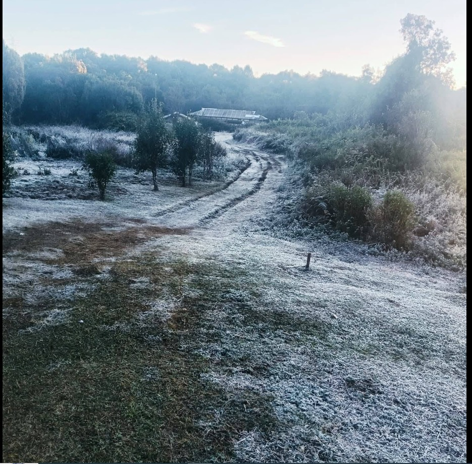
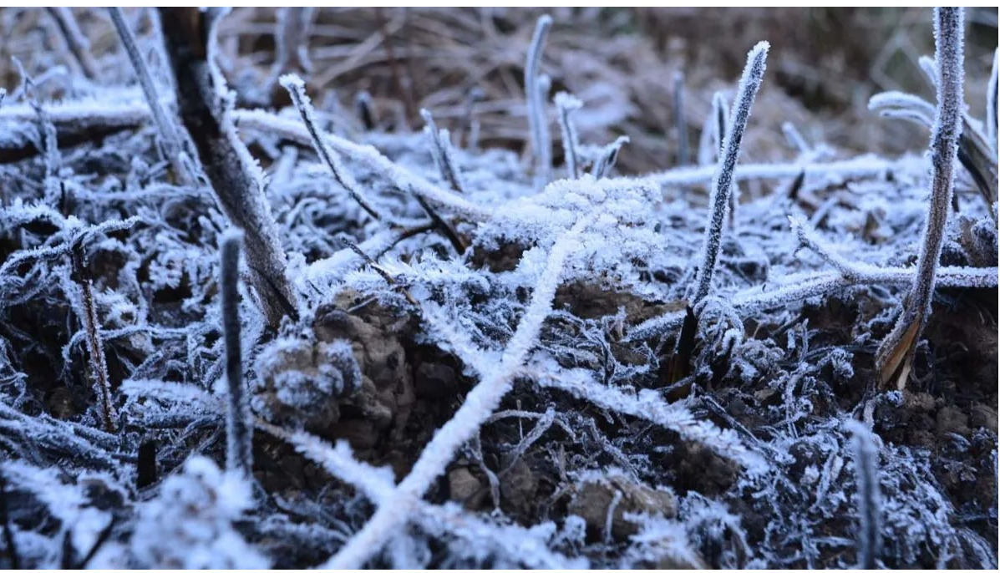

|
 |
Dima Hasao is a beautiful hill district of Assam, and its climate is strongly influenced by its mountainous terrain, elevation, vegetation and seasonal rainfall. Unlike the plains of Assam, many areas of Dima Hasao experience relatively cooler conditions because of their higher elevation. The district generally has a humid subtropical monsoon climate, with warm summers, heavy rainfall during the monsoon season and cooler winters. Its changing weather conditions contribute to the growth of green forests, rich vegetation and diverse natural habitats, making it an attractive destination for nature lovers and tourists. |
|
The summer season in Dima Hasao generally extends from March to May. During this period, temperatures gradually rise, and the weather becomes warmer and more humid. However, elevated places such as Haflong may remain relatively cooler than many lowland areas of Assam. The surrounding hills and vegetation contribute to the region's distinctive natural environment. Summer is a period when plants grow actively and the landscape gradually becomes greener. Visitors can enjoy sightseeing, explore the hill station and observe the natural beauty of the surrounding valleys. As the season progresses, rainfall generally begins to increase, preparing the region for the monsoon. The monsoon season usually extends from June to September and brings substantial rainfall to Dima Hasao. Moist winds and the district's mountainous terrain contribute to the formation of clouds and frequent rain. During this period, the hills, forests and valleys become especially green and beautiful. Rainfall is important for agriculture, forests, rivers and streams. It supports plant growth and helps maintain the district's natural ecosystems. Waterfalls and streams may become more active, adding to the scenic beauty of the region.However, heavy rainfall can also create difficulties. Landslides, soil erosion, damaged roads and transportation interruptions may occur in hilly areas. Therefore, visitors should check weather forecasts and local road conditions before travelling during the monsoon season. Winter generally lasts from November to February. During this period, the weather becomes cooler and is often more comfortable for sightseeing. Temperatures vary according to elevation and local conditions, with higher locations generally experiencing cooler weather than lower areas. The winter season can be suitable for exploring Haflong, visiting historical places such as Maibang and enjoying the scenic landscapes of Dima Hasao. Clearer weather on some days allows visitors to appreciate the surrounding hills and valleys.Winter is also an important period for tourism because many travellers prefer cooler weather for outdoor activities. However, mornings and evenings can be chilly, particularly in elevated locations, so visitors should prepare appropriate clothing. |
 |
The climate of Dima Hasao is an important factor that shapes its natural beauty, vegetation, agriculture and tourism. The district experiences warm summers, a rainy monsoon season and cooler winters, with local conditions varying according to elevation and geography.The monsoon supports green forests, streams and agricultural activities, while the cooler months often provide favourable conditions for sightseeing. At the same time, heavy rainfall may cause landslides, soil erosion and transportation difficulties.
| << Previous | Next >> |